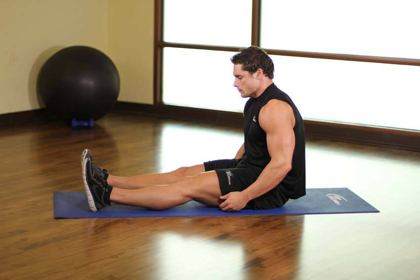
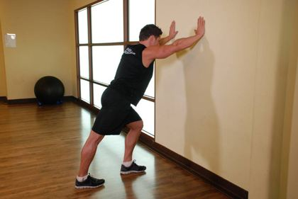
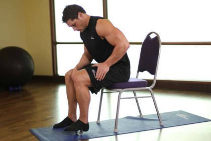
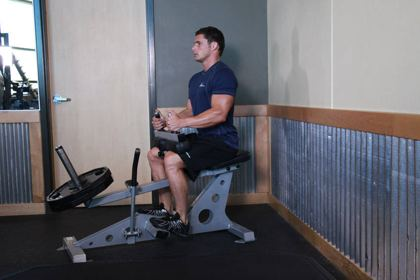
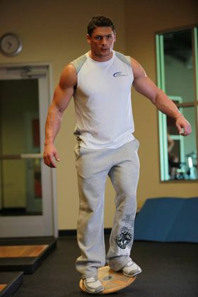
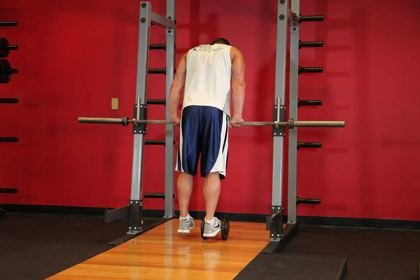
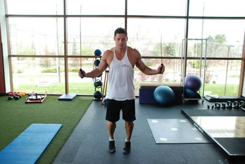
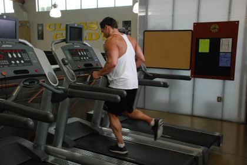

Plantar fasciitis (heel pain): rehab exercises & recovery plan
Pain under the heel from overload of the thick band (plantar fascia) along the arch. Classic sign: sharp pain on the first steps in the morning.
Common in: Running, walking jobs · Body area: Foot · Updated November 2026
Education, not diagnosis. This guide explains how this injury is usually rehabilitated. It cannot tell you what injury you have — see a doctor or physiotherapist to confirm it, especially after a fall, a pop or surgery.
Follow this plan day by day — free. The IKJON app turns it into a calendar with animated demos, timers and a pain diary. No account, no ads.
Start the Plantar fasciitis planTypical signs
- Sharp heel pain on first steps
- Eases after walking a few minutes
- Worse after standing all day
See a doctor first if you have any of these
- Numbness or tingling in the foot
- Pain after a fall or jump (possible fracture)
- Pain worse at night
How long does recovery take?
It depends on how serious the injury is. These are typical plan lengths:
| Severity | Usual description | Typical plan |
|---|---|---|
| Mild Under 6 weeks | Recent, morning pain only. | 60 days (about 9 weeks) |
| Moderate 6 weeks – 6 months | Pain most days. | 90 days (about 3 months) |
| Long-standing Over 6 months | Chronic heel pain. | 120 days (about 4 months) |
The rehab plan, stage by stage
Move to the next stage only when you meet its “move on when” checks — not just because the weeks have passed.
Calm
Goal: Reduce morning pain.

Plantar fascia stretch3 × 30 s
Stretch · Plantar fascia- Sit and cross the leg over the other knee.
- Pull the toes back towards the shin.
- Feel a stretch in the arch.
Tip: Do this before your first steps in the morning.

Calf stretch3 × 30 s
Stretch · Calf & Achilles flexibility- Hands on a wall, injured leg behind.
- Back heel down, knee straight.
- Then bend the back knee to stretch the soleus.
Tip: Hold without bouncing.

Foot roll2 min
Mobility · Arch soft tissue- Roll the arch over a ball or frozen water bottle.
- Moderate pressure.
- Cover heel to toes.
Tip: A frozen bottle also helps calm pain.
Short-foot exercise3 × 10
Isometric · Arch muscles- Sit or stand with the foot flat.
- Pull the ball of the foot towards the heel to raise the arch, toes relaxed.
- Hold, then relax.
Tip: Toes must not curl.
Move on when:
- Morning pain reducing
Load the fascia
Goal: High-load strength for the arch.
High-load heel raise3 × 12
Strength · Plantar fascia strengthening · every 2nd day- Rolled towel under the toes.
- Single-leg heel raise: 3 s up, 2 s hold, 3 s down.
- Add a backpack with books as it gets easy.
Tip: Research-backed protocol for plantar fasciitis.
Towel scrunches3 × 15
Strength · Toe flexors- Foot flat on a towel.
- Curl the toes to pull the towel towards you.
- Spread the toes wide at the end.
Tip: Add a light weight on the towel later.

Bent-knee calf raise3 × 15
Strength · Soleus- Stand with knees bent about 30° (or seated with weight on the knees).
- Rise onto the toes keeping the knee bend.
- Lower slowly.
Tip: The soleus takes huge load when running.

Single-leg balance3 × 30 s
Balance · Balance, ankle reflexes- Stand on one leg, knee soft.
- Progress: eyes closed → on a pillow → catching a ball.
- Stay tall.
Tip: Balance training reduces repeat ankle sprains.
Toe yoga3 × 10
Strength · Small foot muscles- Sit with feet flat.
- Lift only the big toe, keeping the others down.
- Then lift the other four, keeping the big toe down.
Tip: Hard at first — it improves quickly.
Move on when:
- Walking 30 min without pain
Return to run
Goal: Rebuild running.

Single-leg calf raise3 × 15
Strength · Calves, Achilles- Stand on one foot, light hand support.
- Rise as high as possible.
- Lower over 3 s.
Tip: Healthy target: 25+ reps each side.

Pogo hops3 × 20
Plyometric · Ankle stiffness, tendon spring- Small quick hops on both feet, knees nearly straight.
- Stay on the balls of the feet.
- Land quietly.
Tip: Progress to single-leg pogos.

Walk–jog intervals20 min
Cardio · Return to running- Start: 1 min jog / 1 min walk × 10.
- Each pain-free session, add jog time.
- Target 20–30 min continuous easy running.
Tip: Run on flat, even ground first.
High-load heel raise3 × 10
Strength · Plantar fascia strengthening · keep 2×/week- Rolled towel under the toes.
- Single-leg heel raise: 3 s up, 2 s hold, 3 s down.
- Add a backpack with books as it gets easy.
Tip: Research-backed protocol for plantar fasciitis.
Move on when:
- Running without next-morning pain
Important: Supportive shoes, no barefoot walking on hard floors early on. Strengthening speeds recovery.
What the research says
Strength of evidence: Moderate
- High-load single-leg heel raises with a towel under the toes, done every second day, gave better results than stretching at 3 months.
- By 12 months both groups had improved similarly — strength work speeds up recovery.
Sources: Rathleff et al. 2015, Scandinavian Journal of Medicine & Science in Sports (RCT)
Common questions
How long does plantar fasciitis take to heal?
It depends on severity. Mild: about 60 days (about 9 weeks). Moderate: about 90 days (about 3 months). Long-standing: about 120 days (about 4 months). Move on by meeting each stage's checks, not by the calendar alone.
When should I see a doctor?
See a doctor or physiotherapist to confirm the injury, and get help urgently if you notice: Numbness or tingling in the foot; Pain after a fall or jump (possible fracture); Pain worse at night.
Should exercises hurt?
Mild discomfort up to about 3–4 out of 10 that settles within 24 hours is usually acceptable. Stop if pain is sharp, goes above 5 out of 10, or swelling increases afterwards.
Ready to start? Open the plan in the IKJON app and it guides you day by day, with demos for every exercise.
Start the plan free